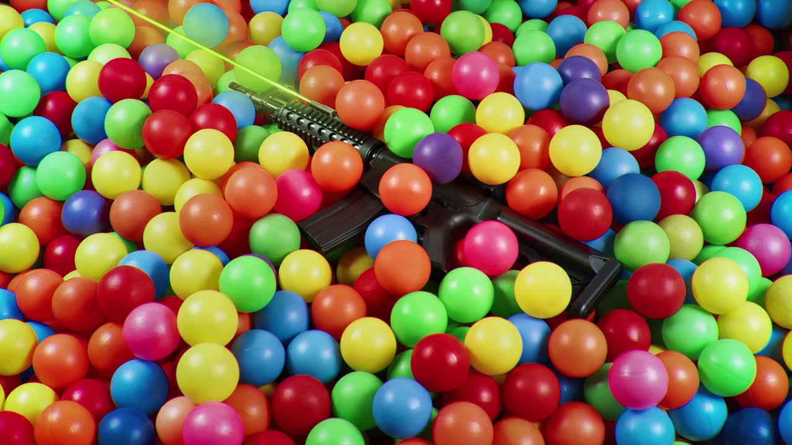

30PRAUM é um selo fonográfico e produtora musical cearense de rap e trap brasileiro fundado em 2014 pela diretora executiva Clara Mendes e pelo rapper Matuê.
A maior produção da 30PRAUM, contando com todos seus artistas é a música VAMPIRO. Essa faixa se tornou a música mais ouvida no Spotify Brasil por cerca de 6 semanas seguidas!!
